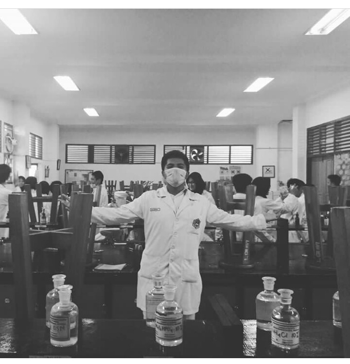

CORTISONE
Welcome to our blog of Cortisone
ABOUT OUR TEAM
Hello April 7, 2014
Tentang Kita nya .

ABOUT CORTISONE
Title description, April 2, 2014
Mauris neque quam, fermentum ut nisl vitae, convallis maximus nisl. Sed mattis nunc id lorem euismod placerat. Vivamus porttitor magna enim, ac accumsan tortor cursus at. Phasellus sed ultricies mi non congue ullam corper. Praesent tincidunt sed tellus ut rutrum. Sed vitae justo condimentum, porta lectus vitae, ultricies congue gravida diam non fringilla.

FUNCTION OF CORTISONE
cari tahu disini !!
Apa Fungsi dari Cortisone ??
Cortisone adalah obat dengan fungsi untuk mengurangi respon pertahanan alami tubuh dan mengurangi gejala seperti pembengkakan dan reaksi alergi. Cortisone adalah hormon kortikosteroid (glucocorticoid). Obat ini digunakan untuk mengobati kondisi seperti artritis, gangguan darah/hormon/sistem imun, reaksi alergi, kondisi-kondisi kulit dan mata tertentu, masalah pernapasan, dan kanker-kanker tertentu.
Bagaimana Cara Penggunaan Cortisone ??
Gunakan obat ini dengan cara diminum dengan susu atau makanan untuk mencegah sakit perut. Minum obat ini dengan segelas air (240 ml) kecuali dokter menganjurkan cara lain. Apabila Anda menggunakan obat ini sekali sehari, gunakan pada pagi hari sebelum jam 9 pagi. Apabila Anda tidak menggunakan obat ini setiap hari atau memiliki jadwal selain jadwal harian, tandai kalender Anda untuk membantu mengingat. Dosis dan durasi pengobatan bergantung pada kondisi kesehatan dan respon pada pengobatan. Gunakan obat ini secara rutin untuk mendapat hasil yang diinginkan. Untuk membantu Anda mengingat, gunakan pada waktu yang sama setiap harinya. Penting untuk melanjutkan pengobatan meskipun Anda sudah merasa lebih baik. Ikuti jadwal dosis dengan baik, dan gunakan obat ini sesuai dengan resep.Jangan menghentikan pengobatan tanpa konsultasi dokter. Beberapa kondisi dapat memburuk saat obat dihentikan secara tiba-tiba. Dosis mungkin perlu dikurangi secara bertahap.Beri tahu dokter apabila kondisi Anda semakin memburuk.

About Our Team
Tentang Kita
About Our Team
-
 Mufty Fadillah Pangestu & Yogi Hermawan
Mufty Fadillah Pangestu & Yogi Hermawan
as a research -

Tiara Agustin & M.Aqsha
as Programer -
 Diva Xafiera & Abda Nurhaqi
Diva Xafiera & Abda Nurhaqi
as Writters

Tags
Travel New York London IKEA NORWAY DIY Ideas Baby Family News Clothing Shopping Sports Games